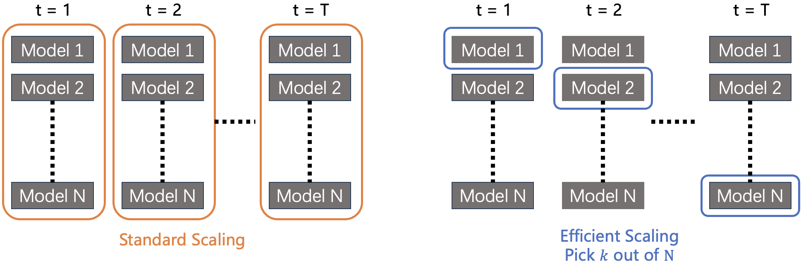
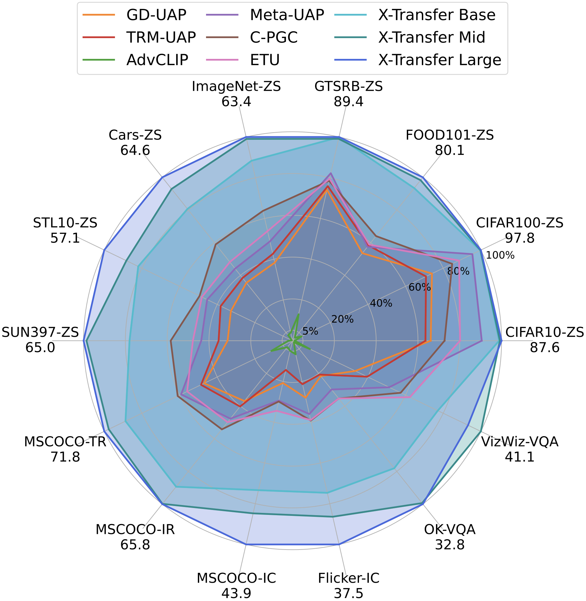

X-Transfer is a novel method for generating universal adversarial perturbations (UAPs) and targeted UAPs (TUAPs) that expose critical vulnerabilities in CLIP-based models. As CLIP becomes central to modern vision-language models, ensuring adversarial robustness is increasingly vital. With just a single perturbation, X-Transfer can fool a wide range of CLIP encoders, large vision-language models (VLMs), and downstream tasks—such as zero-shot classification, image captioning, and visual question answering—revealing a scalable, cross-task safety threat in multimodal AI.
Super transferability is the ability of a single adversarial perturbation to generalize across multiple dimensions in vision-language models. Unlike conventional attacks targeting specific samples or models, X-Transfer produces perturbations that remain effective across:

Traditional scaling methods rely on fixed ensembles of surrogate models, where gradients are computed across all models at each optimization step. While effective, this approach is computationally expensive and does not scale well as the number of surrogates grows.
X-Transfer introduces a more scalable solution: efficient surrogate scaling. At each step, it dynamically selects a small subset of surrogate CLIP encoders—picking k out of N—rather than using all N. This significantly reduces compute costs while maintaining or even improving transferability.
The model selection process is guided by a non-stationary multi-armed bandit algorithm, using the Upper Confidence Bound (UCB) strategy. This balances:
\[ \text{UCB}_i = R_i + \sqrt{\frac{2 \ln n}{n_i}} \]
where \(R_i\) is the cumulative reward of model \(i\), \(n_i\) is the number of times model \(i\) has been selected, and \(n\) is the total number of selections made. This scoring promotes the selection of diverse and challenging surrogates.
The universal adversarial perturbation \(\delta\) is optimized using an embedding-space objective. For the non-targeted case, the optimization problem is defined as:
\[ \underset{\delta}{\arg\min} \; \mathbb{E}_{(x) \sim \mathcal{D}'} \; \text{sim}(f'_I(x + \delta), f'_I(x)) \]
where \(f'_I\) is the surrogate image encoder, and \(\mathcal{D}'\) is the surrogate dataset. The goal is to reduce similarity between clean and perturbed embeddings, ensuring the perturbation fools the model across samples.

The radar chart above illustrates the super transferability of X-Transfer-generated UAPs across a wide spectrum of vision-language tasks, including:
Each point on the radar chart represents the average Attack Success Rate (ASR) on a given dataset, computed across multiple CLIP-based models and large VLMs.
Compared to prior UAP methods like GD-UAP, Meta-UAP, and TRM-UAP, all X-Transfer variants (Base, Mid, Large) achieve superior performance in almost all settings—showcasing their ability to generalize across models, data domains, and downstream tasks with just a single perturbation.
X-TransferBench is an open-source toolkit for benchmarking universal adversarial perturbations (UAPs) with super transferability across models, datasets, and tasks. It provides plug-and-play access to pre-trained X-Transfer UAPs for immediate evaluation or integration.
# From source (latest)
git clone https://github.com/hanxunh/XTransferBench.git
cd XTransferBench
pip install .
# From PyPI
pip install XTransferBench
import XTransferBench.zoo as zoo
# Load a large-scale non-targeted L_inf UAP
attacker = zoo.load_attacker(
'linf_non_targeted',
'xtransfer_large_linf_eps12_non_targeted'
)
# Apply to batch of images
# images: torch.Tensor of shape [B, 3, H, W]
adv_images = attacker(images)
@inproceedings{huang2025xtransfer,
title = {X-Transfer Attacks: Towards Super Transferable Adversarial Attacks on {CLIP}},
author = {Hanxun Huang and Sarah Monazam Erfani and Yige Li and Xingjun Ma and James Bailey},
booktitle = {ICML},
year = {2025},
}